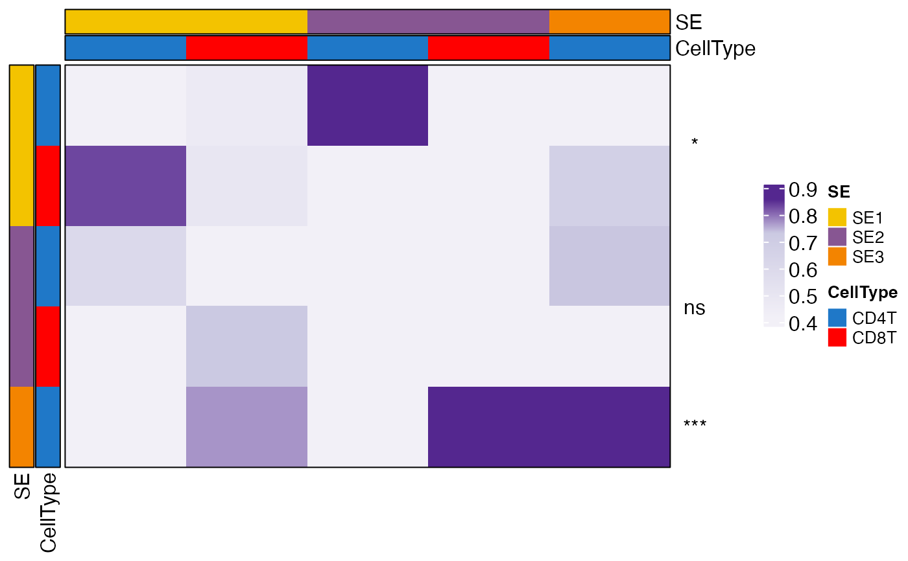

Generates a heatmap to visualize the colocalization indices between SE cell states, optionally annotating significance levels based on p-values. The heatmap includes customizable row and column annotations, color scales, clustering, and significance indicators.
Arguments
- ColocIndex
A numeric matrix of colocalization indices. Row names should be formatted as "SE_CellType".
- Pval
Optional named numeric vector of p-values for each SE. Names should match SE identifiers.
- breaks
Numeric vector specifying break points for the heatmap color scale. Default is the 55th, 75th, and 90th quantiles of
ColocIndex.- colors
Character vector of colors for the heatmap. Default is
c("#f2f0f7", "#cbc9e2", "#54278f").- legend_height
Numeric, height of the legend. Default is 1.
- cluster_rows
Logical, whether to cluster rows. Default is FALSE.
- cluster_cols
Logical, whether to cluster columns. Default is FALSE.
- show_left_legend
Logical, whether to show the left-side legend. Default is FALSE.
- show_column_names
Logical, whether to show column names. Default is FALSE.
- show_row_names
Logical, whether to show row names. Default is FALSE.
- ...
Additional arguments passed to
HeatmapView.
Details
This function splits the row names into two parts: SE (spatial ecosystem) and CellType,
and assigns colors to both categories. If Pval is provided, significance levels are
annotated using "*", "**", "***", or "****" for p-values <0.05, <0.01, <0.001, and <0.0001, respectively.
The heatmap can be customized with clustering, annotations, and color scales.
Examples
# Example usage
col_matrix <- matrix(runif(25), nrow = 5)
rownames(col_matrix) <- c("SE1_CD4T", "SE1_CD8T", "SE2_CD4T", "SE2_CD8T", "SE3_CD4T")
colnames(col_matrix) <- c("SE1_CD4T", "SE1_CD8T", "SE2_CD4T", "SE2_CD8T", "SE3_CD4T")
pvals <- c(SE1 = 0.01, SE2 = 0.2, SE3 = 0.0005)
CooccurrenceHeatmapView(col_matrix, Pval = pvals)
#> Loading required package: pals
#> Warning: `legend_height` you specified is too small, use the default minimal
#> height.
#> Warning: `legend_height` you specified is too small, use the default minimal
#> height.
#> Warning: `legend_height` you specified is too small, use the default minimal
#> height.
